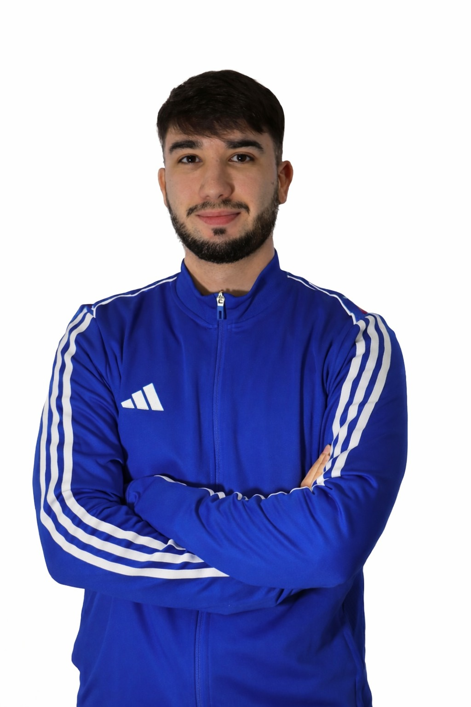

Se trata de un espacio dedicado a la psicología del deporte, en la que encontrarás apoyo profesional para mejorar tu rendimiento deportivo disfrutando cada etapa del proceso. Orientado a deportistas individuales, familias, entrenadores y equipos.
Comenzamos con una primera sesión informativa gratuita, en la que
evaluamos el punto desde el que parte el deportista y qué podemos
trabajar en adelante. Utilizamos herramientas y técnicas
psicológicas basadas en el método científico para trabajar aspectos
clave en el ámbito competitivo.
Las sesiones se desarrollarán vía online y presencial en la provincia de Huelva.

¡Hola! Soy David, psicólogo deportivo, graduado en Psicología por la Universidad de Huelva y especializado en Psicología del Deporte en la Universidad de Sevilla.
Mi formación y experiencia personal en deportes como fútbol, natación y baloncesto me han permitido comprender las exigencias físicas, mentales y emocionales del rendimiento deportivo. Esta trayectoria despertó mi vocación por acompañar a deportistas en su desarrollo personal y competitivo.
Trabajo desde un enfoque cercano y profesional, creando un espacio de confianza donde potenciar el rendimiento, mejorar la preparación psicológica y proporcionar herramientas para que desarrolles autonomía fuera de la consulta.
También mantengo un vínculo activo con el ámbito de los eSports, un entorno altamente exigente a nivel mental y competitivo.
Te acompaño para que construyas tu mejor versión como deportista, desde un enfoque profesional, individualizado y adaptado a tus necesidades reales dentro y fuera del entorno competitivo.
A través de sesiones individuales, valoramos la situación en la que te encuentras y qué aspectos son convenientes trabajar o reforzar, entre los que podemos destacar: la motivación, ansiedad competitiva, establecimiento de objetivos, gestión emocional, toma de decisiones, concentración, confianza, etc.
No obstante, cada deportista y sus circunstancias son diferentes, por lo que nos aseguramos de asesorar de forma personalizada.
Son los responsables del funcionamiento del equipo, pero frecuentemente no cuentan con la ayuda necesaria a nivel mental que esto conlleva. Por tanto, nos centramos en proporcionar técnicas y herramientas que ayuden a desempeñar con mayor calidad y eficiencia las labores correspondientes. Principalmente, habilidades comunicativas, gestión emocional, estrés competitivo, desgaste mental y ansiedad.
Colaborar con un club supone un trabajo prolongado en el tiempo, donde los jugadores y miembros del cuerpo técnico, se ven beneficiados de sesiones individuales y grupales, talleres prácticos, actividades dirigidas, talleres para familias y formaciones sobre aspectos psicológicos en la competición.
El uso de herramientas psicológicas nos permite mejorar el rendimiento y bienestar de los jugadores, suponiendo un factor diferencial en la competición. Por ello, nos centramos en aquellos elementos más importantes de los deportes electrónicos, haciendo énfasis en: concentración, reflejos, control emocional, establecimiento de objetivos, prevención de agotamiento mental, ansiedad y comunicación.
Ofrecemos charlas para equipos, escuelas, academias y centros deportivos. El área a tratar y la duración de la formación, está sujeta a petición del solicitante.
0 €
Primera toma de contacto de 15–20 minutos para conocernos, resolver dudas y valorar el proceso sin compromiso.
40 €
140 €
Sujeto a acuerdo mutuo debido a las condiciones específicas que se ven involucradas.
20 €
Por participante online y presencial.